Unity
1st Place, New Game Design 2026
Unity
1st Place, New Game Design 2026
Hivemind
Build, Expand, Evolve, and make some Honey!
- Role
- Systems Designer, Lead Artist
- Team
- 3 Developers, 2 Artists
- Duration
- 5 Months
- Engine
- Unity
Gallery


Trailer
Overview
Hivemind is an artificial life simulation where you look after a colony of bees living inside a hollow tree trunk, growing their home hexagon by hexagon, breeding new generations and keeping everyone fed and alive through the seasons and whatever the outside world throws at them. The idea the whole game is built around is that up to four players can merge their colonies into a single hive and run it together.
It was made for the Online Game Design course by Tri-Side Die, a team of three, with pixel art by Suraiya Langroodi Warren and bee concepts by Elena Miles, and in July it took first place in the Multiplayer category at New Game Design 2026, judged by twenty-one professionals from twelve companies in the industry. As systems designer and lead artist I designed the breeding mathematics, the ten species and their traits, the creatures that threaten the hive and the events that bring them in, and I painted the concept art for the creatures, the mutations and the events, and made the trailer too.
One hive, Many players
Colony sims have had co-op for years, but it almost always means walking around a world that belongs to somebody else. In Hivemind, when a friend joins you their hive is fused onto yours along the longest wall the two hives share, their bees start working in your rooms and every resource in storage becomes everyone's, so from that moment on there is one colony and the people running it.
What makes it more than building together is that the bees keep living and breeding on their own once the hives are joined, so a friend's carpenters start passing their genes into your nurseries and your cuckoos into theirs, and after a few generations the colony is full of mixes neither of you could have bred alone. Each player still keeps their own queen, told apart by the crown she wears, and since she can never die and her starting nursery can never be destroyed, everyone always has a way back from a disaster.
Everyone in the session also lives on the host's timeline, so the events coming for the hive come for all of you, and they scale with the number of players so that a full lobby can't trivialize them. Going back to your own world restores your timeline to where you left it, and that makes joining a friend a real strategy, since you can put off an event you aren't ready for, or invite friends over to breed in the species you're missing before it arrives.
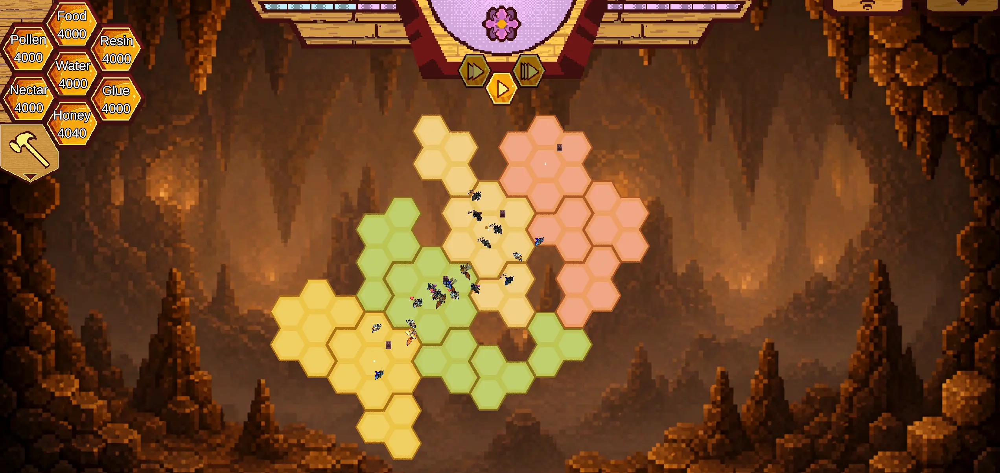
Breeding, and the Maths behind it
Every bee is made of three parts, a head, a body and a stinger, and each part belongs to a species, so a bee with all three from the same species is a pure bee while one with a bumble head on a carpenter body and stinger is 33.33% bumble and 66.67% carpenter. The queen lays eggs that start life as 100% honey bee, and from then on every bee that fertilizes an egg adds its own makeup to the larva with a weight of one over the number of contributors so far, the egg included.
With pure bees it stays simple, one bumble on a fresh egg gives a 50/50 larva and a carpenter joining in makes it an even three way split, but once the bees doing the fertilizing are mixed themselves their percentages get diluted by the same fraction, so a bee that is a third digger contributing to a fifth of a larva only passes on 6.67% digger. After enough bees have had a go the larva can be holding six or seven species at awkward percentages, and when it hatches the game normalizes everything over 100 and rolls the head, the body and the stinger independently against that distribution. That independent roll is where the surprises come from, since a larva that is mostly bumble can still hatch with a digger stinger and a mutated head.
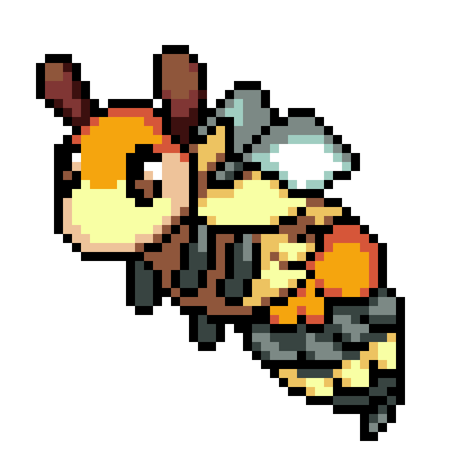
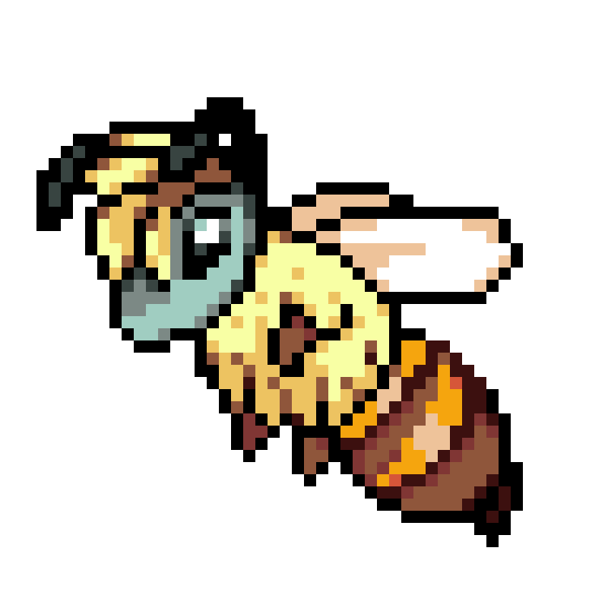
A lot of the rules around it exist to stop players from min-maxing their way to a perfect hive, so eggs always start as honey bees to keep some common blood in the mix, a bee that has fertilized a larva has to wait a full day before doing it again, and bees will wander over and fertilize larvae on their own depending on their Sweetness whether you wanted them to or not. Having only partial control over who breeds with whom felt right for an artificial life game.
The prototype runs a simplified version of this, where the larva pools every part its fertilizers pass on, and selecting one shows the share of each species it's carrying and how long it has left before it hatches.
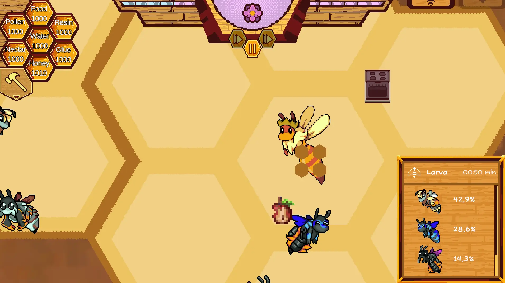
Ten species
Every bee carries ten traits, from Life Span, Hunger and Speed through to Aggression, Sweetness and Luck, each starting from a base value with a random modifier on top so that no two bees come out quite the same. The species sit above that, and I designed all ten around their real counterparts so that each one has a genuine reason to be in your hive and a genuine reason to regret it. To push players towards mixing their lines, parts from the same species don't stack, so a bee with two bumble parts only gets the bumble modifiers once.
Bumble bees, for example, move slowly and grow so big you'll never lose track of one, and they gather far more than anyone else so they're the bee to lean on during calm stretches. Cuckoos are meant to feel like parasites instead, helpful to populate the hive quickly with their Sweetness maxed out but lower overall stats, so they breed relentlessly and are very hard to get out of a hive once you've let them in.
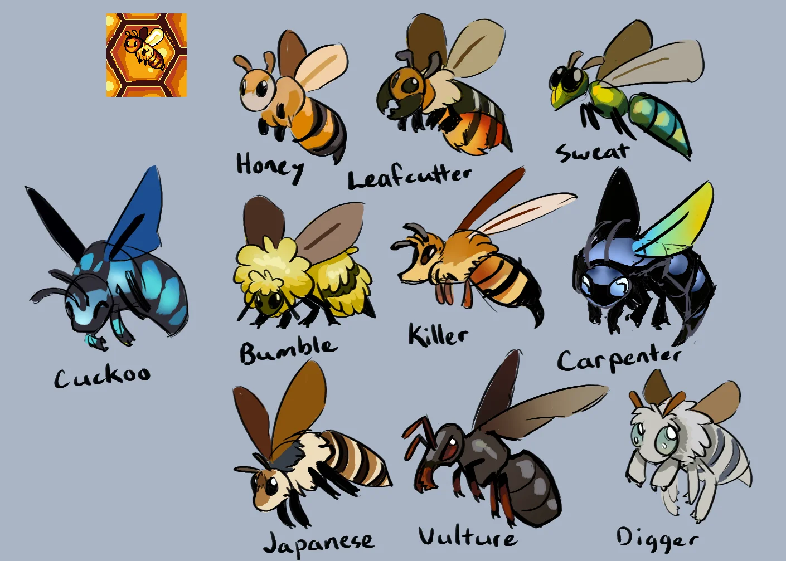
Mutations sit above all of it as rare single parts that can override a species outright, like the Angler head that means the bee never sleeps again, the Tanky body that never needs to eat but slows the bee to a crawl, or the Double Stinger that maxes Aggression and doubles it while cutting the bee's remaining life in half. A few of them tie straight into the events, so an Infrared head lets a soldier spot a Wax Moth the moment it gets in, and a Lavalamp body keeps its bee warm through the winter storms.
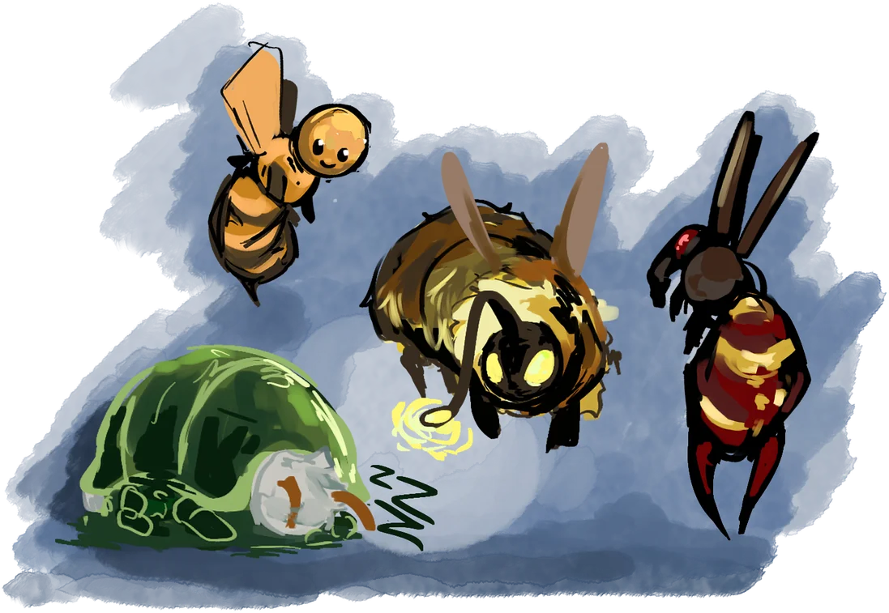
Events Inside and Outside the Hive
I designed the event system around the timeline at the top of the screen. Every day the game decides whether something should happen to the hive, and whatever it picks appears a few days ahead so you can see it coming and build for it. Each season brings its own trouble, such as summer heat waves setting cells alight, autumn rain cracking the walls and flooding the lower rooms, and winter storms that freeze the entrance shut. Once an event has been dealt with the hive gets a few quiet days before the next one, so the pressure never stacks into something unfair.
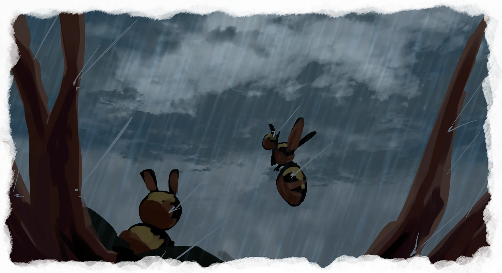
Bees out foraging get events of their own, which borrow straight from tabletop games: you read what your bee has run into, pick one of three ways out that each lean on a different trait, and the game rolls against a hidden difficulty with that trait added on top. A bee's Luck decides which events it can be targeted by in the first place, so an unlucky bee walks into harder situations than a lucky one, and the outcomes range from losing the bee and everything it carried to bringing home a mutation or a bee of a species your hive has never seen.
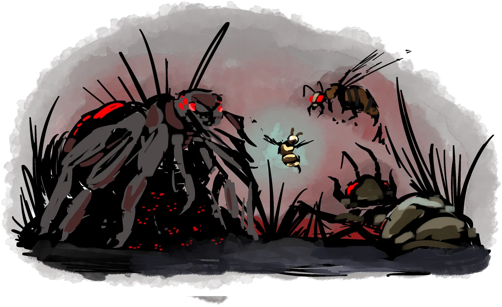
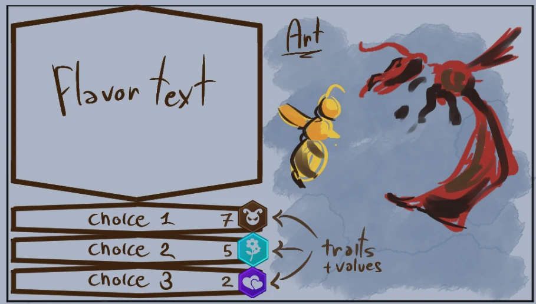
Of everything that can come for a hive, the Giant Hornet and the Wax Moth are the two I took furthest, and they're built as opposites. The hornet is announced well in advance, flies in from whichever side is closest to a nursery and kills a larva with every strike until the nurseries are empty or your bees have worn it down, which makes the layout of the hive the real fight, since spreading the nurseries out guarantees you lose one while clustering them bets on your soldiers getting there first, and some players keep an empty nursery around just as a decoy.
The Wax Moth never announces itself at all. It slips in somewhere in the hive and quietly eats into your honey, and since it doesn't rouse your soldiers the way the hornet does, nobody deals with it until you spot it yourself and point at it. Unlike the hornet, it's the big, established hives it hurts most, since they make enough honey to hide the loss for a very long time, and honey suddenly coming in slower or the timeline going strangely quiet are the clues attentive players learn to read.
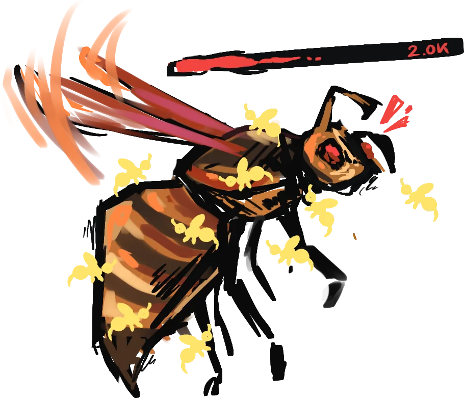
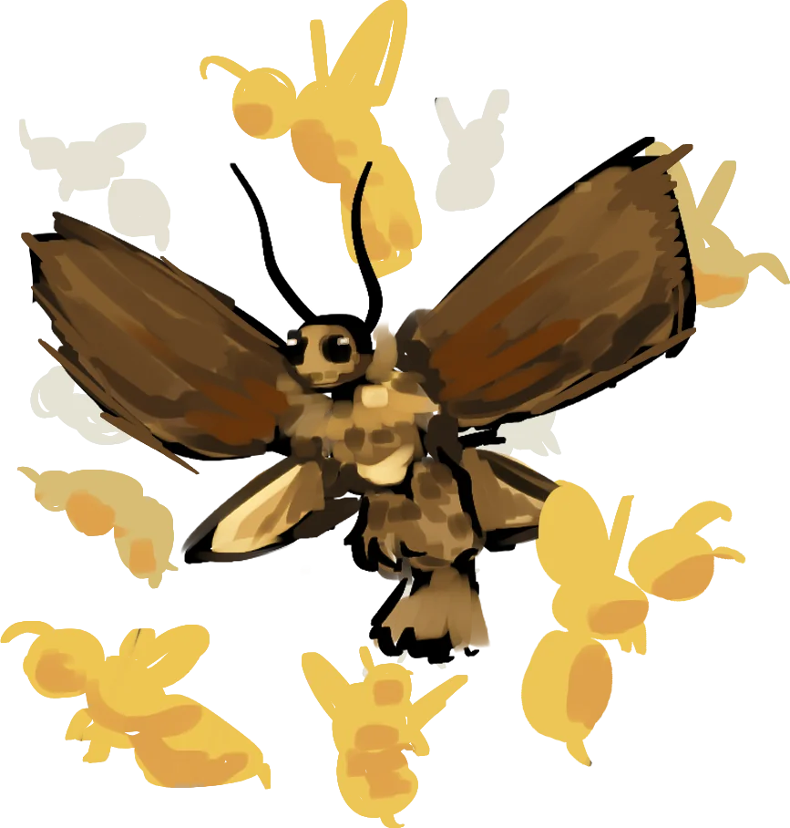